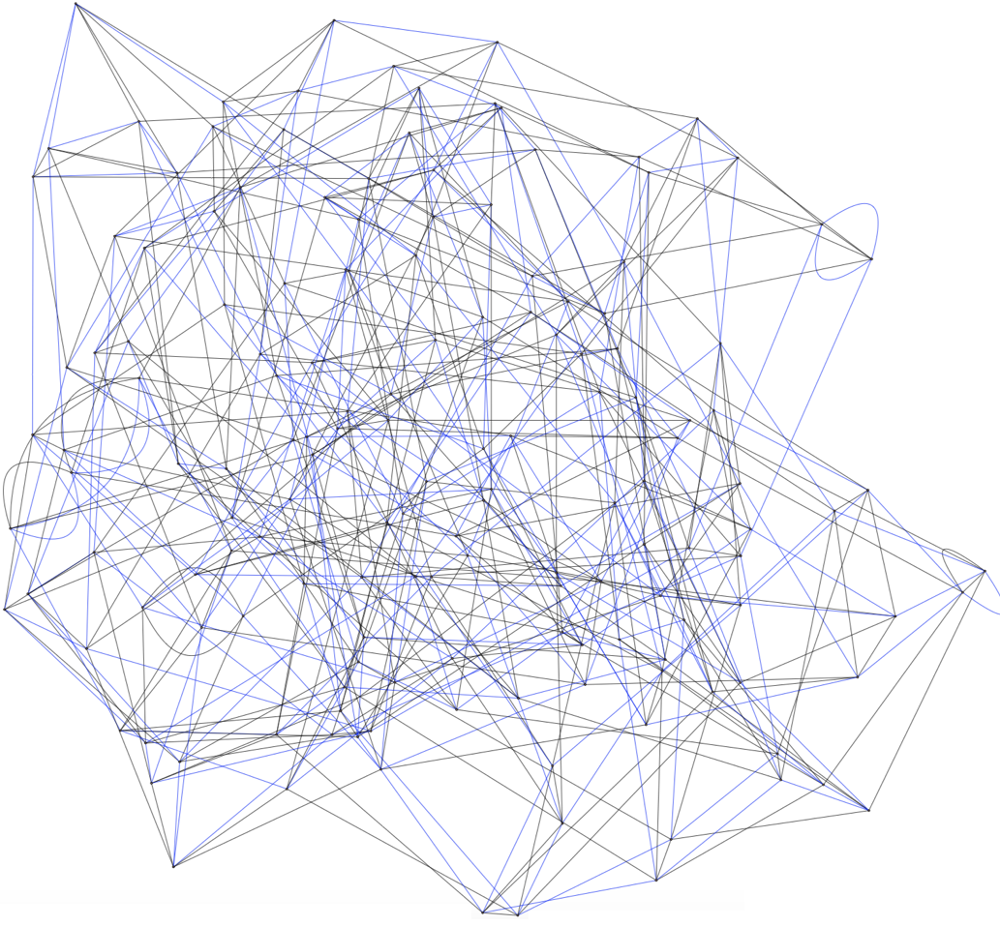

Preprints and Publications
-
(5)Cycles and Cuts in Supersingular ℓ-Isogeny GraphsFinite Fields and Their Applications, 2025
-
(4)A Symmetric p-Adic Symbol for Triples of Modular FormsThe Quarterly Journal of Mathematics, 2025
-
(*)
-
(3)Efficiency of SIDH-based Signatures (yes, SIDH)Journal of Mathematical Cryptology, 2023
-
(2)Collisions in Supersingular Isogeny Graphs and the SIDH-based Identification ProtocolPreprint, 2021
-
(1)Loops, Multi-Edges and Collisions in Supersingular Isogeny GraphsAdvances in Mathematics of Communications, 2021

The supersingular isogeny graph Λ1873(2, 3), generated using SAGE. 1873 is the smallest prime p such that both supersingular isogeny graphs Λp(2) and Λp(3) have no loops — read more in my first paper.